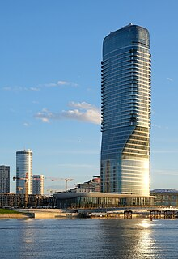
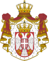

Economy of Serbia
|  | |
| Currency | Serbian dinar (RSD, дин) |
|---|---|
| Calendar year | |
Trade organisations | CEFTA, BSEC, AIIB, Open Balkan, World Bank, IMF, WTO (Observer) |
Country group | |
| Statistics | |
| Population | 6,641,197 (2023)[3] |
| GDP | |
| GDP rank | |
GDP growth |
|
GDP per capita | |
GDP per capita rank | |
GDP by sector |
|
GDP by component |
|
| 5% (2024)[6] | |
Population below poverty line | |
Labour force | |
Labour force by occupation |
|
| Unemployment | |
Average gross salary | RSD 140,532 / €1,200 / $1,303 monthly (May 2024)[18] |
| RSD 100,170 / €856 / $931 monthly (May 2024)[18] | |
Main industries | motor vehicle, base metals, food processing, machinery, chemicals, tires, pharmaceuticals |
| External | |
| Exports | |
Export goods | motor vehicles ($2.42bn), electrical machines ($2.033bn), non-ferrous metals ($2.005bn), rubber and plastics products ($1.670bn), chemicals and chemical products ($1.193bn) |
Main export partners |
|
| Imports | |
Import goods | chemicals and chemical products ($2.408bn), general purpose machinery ($2.100bn), petroleum and natural gas ($1.977bn), motor vehicles ($1.818bn), basic metals ($1.740bn), |
Main import partners |
|
FDI stock |
|
Gross external debt | |
| Public finances | |
| -3.326 billion (2022 est.)[22] | |
| Revenues | 21.159 billion (2022 est.)[22][note 1] |
| Expenses | 24.485 billion (2022 est.)[22] |
| Economic aid | €2.6 billion of EU IPA (2001–2014)[23] €1.5 billion of EU IPA (2014–2020)[24] €14.2 billion of EU IPA III (2021–2027) (Includes Western Balkans and Turkey),[25] €2 billion non-refundable funds €4 billion credit lines (IPA 2021-2027) |
All values, unless otherwise stated, are in US dollars. | |
{kind=link}
| Economy of Serbia |
|---|
|  |
| Overview |
| Sectors |
| Serbia topics |
{kind=link}
The economy of Serbia is a service-based upper-middle income economy in the Central Europe, with the tertiary sector accounting for two-thirds of total gross domestic product (GDP). The economy functions on the principles of the free market. Nominal GDP in 2024 is projected to reach $81.873 billion, which is $12,385 per capita, while GDP based on purchasing power parity (PPP) stood at $185.014 billion, which is $27,985 per capita.[4] The strongest sectors of Serbia's economy are energy, the automotive industry, machinery, mining, and agriculture.[32] The country's primary industrial exports are automobiles, base metals, furniture, food processing, machinery, chemicals, sugar, tires, clothes, and pharmaceuticals.[22] Trade plays a major role in Serbian economic output. The main trading partners are Germany, Italy, Russia, China, and neighbouring Balkan countries.[22]
Belgrade is the capital and economic heart of Serbia and home to most major Serbian and international companies operating in the country, as well as the National Bank of Serbia and the Belgrade Stock Exchange. Novi Sad and Niš are the second and third largest cities respectively and the most important economic hubs after Belgrade.
Historical preview
[edit]In the decades leading up to World War I, GDP growth in Serbia grew by 0.28% per annum.[33] This was a slower growth rate than north-western Europe, leading to a widening economic divergence between Serbia and Western Europe. Prior to WWI, there was extensive growth in Serbia's dominant agricultural sector. However, industrial and service sectors remained small.[33]
In the late 1980s, at the beginning of the process of economic transition from a planned economy to a market economy, Serbia's economy had a favourable position in comparison to most of the Eastern Bloc countries, but it was gravely impacted by poor economic decision making in the 1990s,[34] the Yugoslav Wars, and UN sanctions and trade embargo during the 1990s.[35] At the same time, the country experienced a serious "brain drain".[36] There was a severe recession which continued until 1999.[34] After the overthrow of Slobodan Milošević in 2000, Serbia went through a process of transition to a market-based economy and experienced fast economic growth. During that period, the Serbian economy grew 4-5% annually, average wages quadrupled, and economic and social opportunities dramatically improved. During the Great Recession, Serbia marked a decline in its economy of 3.1% in 2009, and following years of economic stagnation pre-crisis level of GDP was reached only in 2016.
Since 2014, the country has been in the process of accession negotiations to join the European Union.[37]
Macroeconomic trends
[edit]Economic growth
[edit]IMF projections show that by 2026, Serbia will become the largest economy among the successor states of the former Yugoslavia, while by 2029 it will further increase the gap in its favor simultaneously consolidating its position as the most powerful economy among the former Yugoslav Republics.[38] The Serbian economy will be worth $116 billion in 2029. Measured by purchasing power parity, the Serbian economy has been the largest among the former Yugoslav Republics since 2008.[39]
Serbia's net debt is currently below 60% of GDP defined by the Maastricht criteria as the upper limit of an acceptable level. Moving towards 2029, the IMF projects that Serbia's net debt will remain the second lowest among the countries of the former Yugoslavia and among the lowest net debts in all of Europe at 41.7% in relation to its GDP.[40] The gross debt position will also remain the second lowest among the former Yugoslav states and among the lowest on the old continent. In dynamics, gross debt will continue to decline from the current 49% to 46% of GDP by 2029.[41]
The average growth of Serbia's GDP in the last five years was 4% per year. GDP structure by sector is: services 67.9%, industry 26.1%, agriculture 6.0%.[5]
GDP - composition, by end use
household consumption: 78.2% (2017 est.)
 government consumption: 10.1% (2017 est.)
government consumption: 10.1% (2017 est.)
investment in fixed capital: 18.5% (2017 est.)
investment in inventories: 2% (2017 est.)
exports of goods and services: 52.5% (2017 est.)
imports of goods and services: -61.3% (2017 est.) [42]
| GDP Growth | ||||||||||||||||||||||||
|---|---|---|---|---|---|---|---|---|---|---|---|---|---|---|---|---|---|---|---|---|---|---|---|---|
| Year | 2000 | 2001 | 2002 | 2003 | 2004 | 2005 | 2006 | 2007 | 2008 | 2009 | 2010 | 2011 | 2012 | 2013 | 2014 | 2015 | 2016 | 2017 | 2018 | 2019 | 2020 | 2021 | 2022 | 2023 |
| Rate | 7.8% | 5.0% | 7.1% | 4.4% | 9.0% | 5.5% | 9.7% | 6.4% | 5.7% | -2.7% | 0.7% | 2.0% | -0.7% | 2.9% | -1.6% | 1.8% | 3.3% | 2.0% | 4.4% | 4.2% | -0.9% | 7.5% | 2.3% | 2.5% |
| Source: World Bank[5] | ||||||||||||||||||||||||
Public finances
[edit]Serbia's public debt relative to GDP from 2000 to 2008 decreased by 140.1 percentage points, and then started increasing again as the government was fighting effects of worldwide 2008 financial crisis. In 2018, the public debt stood at 53.8% of GDP.[43]
| Public debt | ||||||||||||||||||
|---|---|---|---|---|---|---|---|---|---|---|---|---|---|---|---|---|---|---|
| Year | 2000 | 2002 | 2004 | 2006 | 2008 | 2009 | 2010 | 2011 | 2012 | 2013 | 2014 | 2015 | 2016 | 2017 | 2018 | 2021 | 2022 | |
| Billions EUR | 14.17 | 13.43 | 11.02 | 9.35 | 8.78 | 9.85 | 12.16 | 14.78 | 17.72 | 20.14 | 22.76 | 24.81 | 24.71 | 23.21 | 23.01 | 29.60 | 30.56 | |
| Share of GDP | 201.2% | 68.3% | 52.6% | 35.9% | 28.3% | 32.8% | 41.8% | 45.4% | 56.2% | 59.6% | 70.4% | 74.7% | 71.9% | 61.5% | 53.8% | 56.5% | 52.1% | |
| Source: Ministry of Finance of Serbia Archived 13 May 2018 at the Wayback Machine Public debt Administration | ||||||||||||||||||
Serbian foreign exchange reserves were highly augmented from 2000 to 2009, when they amounted 10.6 billion euros and have stayed at that level ever since.
| Foreign exchange reserves | ||||||||||||||||||
|---|---|---|---|---|---|---|---|---|---|---|---|---|---|---|---|---|---|---|
| Year | 2000 | 2002 | 2004 | 2006 | 2008 | 2009 | 2010 | 2011 | 2012 | 2013 | 2014 | 2015 | 2016 | 2017 | 2018 | 2021 | 2022 | |
| Central bank (bln. EUR) | 0.55 | 2.19 | 3.10 | 9.02 | 8.16 | 10.60 | 10.00 | 12.06 | 10.91 | 11.19 | 9.91 | 10.38 | 10.20 | 9.96 | 11.26 | 13.90 | 14.22 | |
| Comm. banks (bln. EUR) | 0.39 | 0.68 | 0.59 | 0.52 | 0.92 | 1.42 | 1.68 | 0.80 | 1.06 | 0.91 | 1.73 | 1.43 | 1.56 | 1.11 | 1.63 | 2.55 | 3.05 | |
| Total (bln. EUR) | 0.95 | 2.86 | 3.70 | 9.54 | 9.08 | 12.03 | 11.69 | 12.87 | 11.97 | 12.10 | 11.64 | 11.81 | 11.76 | 11.07 | 12.89 | 16.45 | 17.27 | |
| Source: National Bank of Serbia | ||||||||||||||||||
Currency and inflation
[edit]{kind=link}
The official currency in Serbia is the Serbian dinar and its earliest use dates back to 1214.
Serbia historically has battled high inflation, especially during the 1980s and 1990s. In 1992 and 1993, it experienced a period of hyperinflation which lasted for a total of 25 months.[44] In 1993, the monthly inflation rate stood at a staggering 313 million percent.[44] Since the early 2000s, the inflation rate has stabilized and in the last couple of years a relatively low level of inflation was recorded.
| Inflation and Serbian dinar Exchange Rates | ||||||||||||||||||
|---|---|---|---|---|---|---|---|---|---|---|---|---|---|---|---|---|---|---|
| Year | 2002 | 2004 | 2006 | 2008 | 2009 | 2010 | 2011 | 2012 | 2013 | 2014 | 2015 | 2016 | 2017 | 2018 | 2019 | 2020 | 2021 | 2022 |
| Inflation rate | 19.5% | 11.0% | 11.7% | 12.4% | 8.1% | 6.1% | 11.1% | 7.3% | 7.7% | 2.1% | 1.4% | 1.1% | 3% | 2% | 1.9% | 1.1% | 4.2% | 15.0% |
| USD/RSD | 58.98 | 57.94 | 59.98 | 62.90 | 66.73 | 79.28 | 80.87 | 86.18 | 83.13 | 99.46 | 111.25 | 117.13 | 99.11 | 103.39 | 104.92 | 101.92 | 103.61 | 110.48 |
| EUR/RSD | 61.51 | 78.89 | 79.00 | 88.60 | 95.89 | 105.50 | 104.64 | 113.72 | 114.64 | 120.96 | 121.63 | 123.47 | 118.45 | 118.19 | 117.59 | 117.45 | 117.22 | 117.67 |
| Source: World Bank,National Bank of Serbia; Note: All exchange data retrieved each year on December 31 | ||||||||||||||||||
External trade
[edit]{kind=link}
Serbia has a wide range of free trade agreements with foreign countries and trading blocs.
Serbia signed a free trade agreement with the European Union in 2008 enabling exports of all products originating from Serbia without customs and other fees.[45] For a limited number of products (baby beef, sugar, and wine), annual import quotas remain in effect. As of 2016, the EU countries were the largest trading partners of Serbia with 64.4% of country's total foreign trade.[46]
Serbia signed the CEFTA, which allows exports of all products originating from Serbia without customs and other fees to the neighbouring countries: Albania, Bosnia and Herzegovina, North Macedonia, Moldova, Montenegro and Kosovo.[45] In 2016, the CEFTA countries were the second largest trading partners of Serbia.[47]
Serbia signed a free trade agreement with EFTA members (Switzerland, Norway, Iceland) in 2009.[48]
The Serbian free-trade agreement with Russia was implemented since 2000; for a limited number of products, annual import quotas remain in effect.[45][49] Free-trade agreement with Turkey has been implemented since 2010.[49] Trade with the United States is pursued under the Generalized System of Preferences (GSP) with a preferential duty-free entry for approximately 4,650 products.[50]
Serbia signed a free trade agreement with China in October 2023, after six years of negotiations.[51]
| External trade | |||||||||||||||||||
|---|---|---|---|---|---|---|---|---|---|---|---|---|---|---|---|---|---|---|---|
| Year | 2000 | 2002 | 2004 | 2006 | 2008 | 2010 | 2011 | 2012 | 2013 | 2014 | 2015 | 2016 | 2017 | 2018 | 2019 | 2020 | 2021 | 2022 | 2023 |
| Exports (mil. USD): | 1,558 | 2,074 | 3,523 | 6,431 | 10,974 | 9,794 | 11,780 | 11,353 | 14,614 | 14,843 | 13,379 | 14,883 | 16,992 | 19,227 | 19,630 | 19,501 | 25,563 | 29,059 | 30,934 |
| Imports (mil. USD): | 5,614 | 5,614 | 10,755 | 13,174 | 24,332 | 16,471 | 19,862 | 19,014 | 20,543 | 20,650 | 18,218 | 19,247 | 21,946 | 25,883 | 26,730 | 26,233 | 33,797 | 41,154 | 39,837 |
| Balance (mil. USD): | -1,772 | -3,540 | -7,232 | -6,743 | -13,358 | -6,677 | -8,082 | -7,661 | -5,929 | -5,806 | -4,839 | -4,363 | -4,954 | -6,657 | -7,101 | -6,733 | -8,234 | -12,095 | -8,903 |
| Exports/Imports (%): | 46.8 | 36.9 | 32.8 | 48.8 | 45.1 | 59.5 | 59.3 | 59.7 | 71.1 | 71.9 | 73.4 | 78.8 | 77.4 | 74.3 | 73.4 | 74.3 | 76.4 | 70.6 | 77.7 |
| Source: Statistical Office of Serbia | |||||||||||||||||||
Foreign direct investments
[edit]Attracting foreign direct investments is set as a priority for the government of Serbia, which provides both financial and tax incentives to companies willing to invest.[52] Leading investor nations in Serbia include: Germany, Italy, United States, China, Austria, Norway, and Greece.[53] Majority of FDI went into automotive industry, food and beverage industry, machinery, textile and clothing.[53] Foreign direct investments (FDI) coming from the EU accounted for more than 63% of total FDI coming to Serbia from the period of 2010 until 2021.[54]
Blue-chip corporations making investments in manufacturing sector include: Fiat Chrysler Automobiles, Bosch, Michelin, Siemens, Panasonic, Continental, Schneider Electric, Philip Morris, LafargeHolcim, PepsiCo, Coca-Cola, Carlsberg and others.[55] In the energy sector, Russian energy giants, Lukoil and Gazprom have made large investments.[56] In metallurgy sector, Chinese steel and copper giants, Hesteel and Zijin Mining have acquired steel mill in Smederevo and copper mining complex in Bor, respectively.[57] The financial sector has attracted investments from Italian banks such as Intesa Sanpaolo and UniCredit, Crédit Agricole and Société Générale from France, Erste Bank and Raiffeisen from Austria, among others.[58] ICT and telecommunications saw investments from likes such as Microsoft, Telenor, Telekom Austria, and NCR. In retail sector, biggest foreign investors are Dutch Ahold Delhaize, German Metro AG and Schwarz Gruppe, Greek Veropoulos, and Croatian Fortenova.
| Foreign direct investments | ||||||||||||||||||||||
|---|---|---|---|---|---|---|---|---|---|---|---|---|---|---|---|---|---|---|---|---|---|---|
| Year | 2000 | 2002 | 2003 | 2004 | 2005 | 2006 | 2007 | 2008 | 2009 | 2010 | 2011 | 2012 | 2013 | 2014 | 2015 | 2016 | 2017 | 2018 | 2019 | 2020 | 2021 | 2022 |
| Total (mil. USD) | 54 | 546 | 1,511 | 1,077 | 1,579 | 5,663 | 4,389 | 3,407 | 2,729 | 1,549 | 3,018 | 2,629 | 1,518 | 1,550 | 2,114 | 2,080 | 2,867 | 3,984 | 4,605 | 3,638 | 4,433 | 4,709 |
| Per capita (USD) | 7.2 | 72.8 | 202.0 | 144.3 | 212.2 | 764.0 | 594.6 | 461.5 | 372.8 | 212.5 | 415.8 | 365.2 | 211.9 | 216.7 | 297.7 | 292.9 | 320.6 | 569.1 | 602.3 | 552.3 | 644.6 | 703.8 |
| Source: Development Agency of Serbia National Bank of Serbia | ||||||||||||||||||||||
Economic sectors
[edit]In 2022, the sector with the highest number of companies registered in Serbia is Services with 125,511 companies followed by Wholesale Trade and Manufacturing with 28,699 and 21,865 companies respectively.[59]
Agriculture
[edit]{kind=link}
{kind=link}
Serbia has very favourable natural conditions (land and climate) for varied agricultural production. It has 5,056,000 ha of agricultural land (0.7 ha per capita), out of which 3,294,000 ha is arable land (0.45 ha per capita).[60] In 2016, Serbia exported agricultural and food products worth $3.2 billion, and the export-import ratio was 178%.[61] Agricultural exports constitute more than one-fifth of all Serbia's sales on the world market. Serbia is one of the largest provider of frozen fruit to the EU (largest to the French market, and second largest to the German market).[62] Agricultural production is most prominent in Vojvodina on the fertile Pannonian Plain. Other agricultural regions include Mačva, Pomoravlje, Tamnava, Rasina, and Jablanica.[63] In the structure of the agricultural production 70% is from the crop field production, and 30% is from the livestock production.[63] Serbia is world's second largest producer of plums (582,485 tons; second to China) and the third largest of raspberries (127,010 tons, trailing only Russia and the United States).[64] It is also significant producer of maize (6.48 million tons, ranked 32nd in the world) and wheat (2.07 million tons, ranked 35th in the world).[65][66] Other important agricultural products are: sunflower, sugar beet, soybean, potato, apple, mutton, pork meat, beef, poultry and dairy.
There are 56,000 ha of vineyards in Serbia, producing about 230 million litres of wine annually.[65][60] Most famous viticulture regions are located in Vojvodina and Šumadija. [67]
Energy
[edit]{kind=link}
The energy sector is one of the largest and most important sectors to the country's economy. Serbia is a net exporter of electricity and importer of key fuels (such as oil and gas).
Serbia has an abundance of coal, and significant reserves of oil and gas. Serbia's proven reserves of 5.5 billion tons of coal lignite are the 5th largest in the world (second in Europe, after Germany).[68][69] Coal is found in two large deposits: Kolubara (4 billion tons of reserves) and Kostolac (1.5 billion tons).[68] Despite being small on a world scale, Serbia's oil and gas resources (77.4 million tons of oil equivalent and 48.1 billion cubic meters, respectively) have a certain regional importance since they are largest in the region of former Yugoslavia as well as the Balkans (excluding Romania).[70] Almost 90% of the discovered oil and gas are to be found in Banat and those oil and gas fields are by size among the largest in the Pannonian basin but are average on a European scale.[71]
The production of electricity in 2018 in Serbia was 38.3 billion kilowatt-hours (KWh), while the final electricity consumption amounted to 28.1 billion kilowatt-hours (KWh).[72] Most of the electricity produced comes from thermal-power plants (71% of all electricity) and to a lesser degree from hydroelectric-power plants (24%) and wind energy (3%).[73] There are 6 lignite-operated thermal-power plants with an installed power of 3,936 MW; largest of which are 1,502 MW-Nikola Tesla 1 and 1,160 MW-Nikola Tesla 2, both in Obrenovac.[74] Total installed power of 9 hydroelectric-power plants is 2,831 MW, largest of which is Đerdap 1 with capacity of 1,026 MW.[75] In addition to this, there are mazute and gas-operated thermal-power plants with an installed power of 353 MW.[76] The entire production of electricity is concentrated in Elektroprivreda Srbije (EPS), public electric-utility power company.
The current oil production in Serbia amounts to over 1.1 million tons of oil equivalent[77] and satisfies some 43% of country's needs while the rest is imported.[78] National petrol company, Naftna Industrija Srbije (NIS), was acquired in 2008 by Gazprom Neft. The company's refinery in Pančevo (capacity of 4.8 million tons) is one of the most modern oil-refineries in Europe; it also operates network of 334 filling stations in Serbia (74% of domestic market) and additional 36 stations in Bosnia and Herzegovina, 31 in Bulgaria, and 28 in Romania.[79][80] There are 155 kilometers of crude oil pipelines connecting Pančevo and Novi Sad refineries as a part of trans-national Adria oil pipeline.[81]
Serbia is heavily dependent on foreign sources of natural gas, with only 17% coming from domestic production (totalling 491 million cubic meters in 2012) and the rest is imported, mainly from Russia (via gas pipelines that run through Ukraine and Hungary).[78] Srbijagas, public company, operates the natural gas transportation system which comprise 3,177 kilometers of trunk and regional natural gas pipelines and a 450 million cubic meter underground gas storage facility at Banatski Dvor.[82]
Industry
[edit]The industry is the economy sector which was hardest hit by the UN sanctions and trade embargo and NATO bombing during the 1990s and transition to market economy during the 2000s.[35] The industrial output saw dramatic downsizing: in 2013 it was expected to be only a half of that of 1989.[83] Main industrial sectors include: automotive, mining, non-ferrous metals, food-processing, electronics, pharmaceuticals, clothes. Serbia has 14 free economic zones as of September 2017,[84] in which many foreign direct investments are realized.
Automotive industry (with Fiat Chrysler Automobiles as a forebearer) is dominated by cluster located in Kragujevac and its vicinity, and contributes to export with about $2 billion.[85] Country is a leading steel producer in the wider region of South Central Europe and had production of nearly 2 million tons of raw steel in 2018, coming entirely from Smederevo steel mill, owned by the Chinese Hesteel.[86]
Serbia notably manufactures intel smartphones named Tesla smartphones.[87]
Food industry is well known both regionally and internationally and is one of the strong points of the economy.[88] Some of the international brand-names established production in Serbia: PepsiCo and Nestlé in food-processing sector; Coca-Cola (Belgrade), Heineken (Novi Sad) and Carlsberg (Bačka Palanka) in beverage industry; Nordzucker in sugar industry.[62] Serbia's electronics industry had its peak in the 1980s and the industry today is only a third of what it was back then, but has witnessed a something of revival in last decade with investments of companies such as Siemens (wind turbines) in Subotica, Panasonic (lighting devices) in Svilajnac, and Gorenje (electrical home appliances) in Valjevo.[89] The pharmaceutical industry in Serbia comprises a dozen manufacturers of generic drugs, of which Hemofarm in Vršac and Galenika in Belgrade, account for 80% of production volume. Domestic production meets over 60% of the local demand.[90]
Mining
[edit]Serbia's mining industry is comparatively strong: Serbia is the 18th largest producer of coal (7th in the Europe) extracted from large deposits in Kolubara and Kostolac basins; it is also world's 23rd largest (3rd in Europe) producer of copper which is extracted by Zijin Bor Copper, a large copper mining company, acquired by Chinese Zijin Mining in 2018; significant gold extraction is developed around Majdanpek.
Telecommunications and IT industry
[edit]Fixed telephone lines connect 89% of households in Serbia, and with about 8.82 million users the number of cellphones surpasses the total population of Serbia by 25%. The largest mobile operator is Telekom Srbija with 4.06 million subscribers, followed by Yettel Serbia with 2.73 million users and A1 Srbija with about 2.03 million.[91] Some 58% of households have fixed-line (non-mobile) broadband Internet connection while 67% are provided with pay television services (i.e. 38% cable television, 17% IPTV, and 10% satellite).[92] Digital television transition has been completed in 2015 with DVB-T2 standard for signal transmission.[93]
The Serbian IT industry is rapidly growing and changing pace. In 2018, IT services exports reached $1.3 billion.[94] With 6,924 companies in the IT sector (2013 data[update]), Belgrade is one of the information technology centers in this part of Europe, with strong growth.[95] Microsoft Development Center located in Belgrade was at the time of its establishment fifth such center in the world.[96] Many world IT companies choose Belgrade as regional or European center such as Asus,[97] Intel,[98] Dell,[99] Huawei, NCR,[100] Ubisoft[101] etc. These companies have taken advantage of Serbia's large pool of engineers and relatively low wages.
Large investments by global tech companies like Microsoft, typical of the 2000s, are being eclipsed by a growing number of domestic startups which obtain funding from domestic and international investors. What brought companies like Microsoft in the first place was a large pool of talented engineers and mathematicians.[102] In just the first quarter of 2016, more than US$65 million has been raised by Serbian startups including $45 million for Seven Bridges (a Bioinformatics firm) and $14 million for Vast (a data analysis firm).[103][104] One of the most successful startups have been Nordeus which was founded in Belgrade in 2010 and is one of Europe's fastest-growing companies in the field of computer games (the developer of Top Eleven Football Manager, a game played by over 20 million people).[105]
.jpg){kind=link}
.jpg){kind=link}
Tourism
[edit]The touristic sector accounted for 1.4% of GDP in 2017 and employs some 75,000 people, about 3% of the country's workforce.[5][106] Foreign exchange earnings from tourism in 2018 were estimated at $1.5 billion.[107]
Serbia is not a mass-tourism destination but nevertheless has a diverse range of touristic products.[108] In 2018, total of over 3.4 million tourists were recorded in accommodations, of which half were foreign.[109]
Tourism is mainly focused on the mountains and spas of the country, which are mostly visited by domestic tourists, as well as Belgrade which is preferred choice of foreign tourists. The most famous mountain resorts are Kopaonik, Stara Planina, and Zlatibor. There are also many spas in Serbia, the biggest of which is Vrnjačka Banja, Soko Banja, and Banja Koviljača. City-break and conference tourism is developed in Belgrade (which was visited by 938,448 foreign tourists in 2018, more than a half of all international visits to the country) and to a lesser degree Novi Sad. Other touristic products that Serbia offer are natural wonders like Đavolja varoš, Christian pilgrimage to the many Orthodox monasteries across the country and the river cruising along the Danube. There are several internationally popular music festivals held in Serbia, such as EXIT (with 25–30,000 foreign visitors coming from 60 countries) and the Guča trumpet festival.[110]
Transport
[edit]Serbia has a strategic transportation location since the country's backbone, Morava Valley, represents by far the easiest route of land travel from continental Europe to Asia Minor and the Near East.
Serbian road network carries the bulk of traffic in the country. Total length of roads is 45,419 km of which 915 km are "class-Ia state roads" (i.e. motorways); 4,481 km are "class-Ib state roads" (national roads); 10,941 km are "class-II state roads" (regional roads) and 23,780 km are "municipal roads".[111][112][113] The road network, except for the most of class-Ia roads, are of comparatively high quality to the Western European standards because of huge financial investments Serbias has been seeing in the last 10 years.
Over 300 kilometers of new motorways has been constructed in the last decade and additional 142 kilometers are currently under construction: A5 motorway (from north of Kruševac to Čačak) and 30 km-long segment of A2 (between Čačak and Požega).[114][115] Coach transport is very extensive: almost every place in the country is connected by bus, from largest cities to the villages; in addition there are international routes (mainly to countries of Western Europe with small Serb diaspora). Routes, both domestic and international, are served by more than 100 bus companies, biggest of which are Lasta and Niš-Ekspres. As of 2018[update], there were 1,959,584 registered passenger cars or 1 passenger car per 3.5 inhabitants.[116]
Serbia has 3,819 kilometers of rail tracks, of which 1,279 are electrified and 283 kilometers are double-track railroad.[65] The major rail hub is Belgrade (and to a lesser degree Niš), while the most important railroads include: Belgrade–Bar (Montenegro), Belgrade–Šid–Zagreb (Croatia)/Belgrade–Niš–Sofia (Bulgaria) (part of Pan-European Corridor X), Belgrade–Subotica–Budapest (Hungary) and Niš–Thessaloniki (Greece). Although still a major mode of freight transportation, railroads face increasing problems with the maintenance of the infrastructure and lowering speeds. The rail services are operated by Srbija Voz (passenger transport) and Srbija Kargo (freight transport).[117]
There are three airports with regular passenger traffic. Belgrade Nikola Tesla Airport served 5.6 million passengers in 2018 and is a hub of flagship carrier Air Serbia which carried some 2.5 million passengers in 2018.[118] Niš Constantine the Great Airport is mainly catering low-cost airlines.[119] Morava Airport is currently only served by Air Serbia.
Serbia has a developed inland water transport since there are 1,716 kilometers of navigable inland waterways (1,043 km of navigable rivers and 673 km of navigable canals), which are almost all located in northern third of the country.[65] The most important inland waterway is the Danube (part of Pan-European Corridor VII). Other navigable rivers include Sava, Tisza, Begej and Timiş River, all of which connect Serbia with Northern and Western Europe through the Rhine–Main–Danube Canal and North Sea route, to Central Europe via the Tisza, Begej and Danube Black Sea routes, and to Southern Europe via the Sava river. More than 2 million tons of cargo were transported on Serbian rivers and canals in 2016 while the largest river ports are: Novi Sad, Belgrade, Pančevo, Smederevo, Prahovo and Šabac.[65][120]
{kind=link}
Economic indicators
[edit]The following table shows the main economic indicators
| Year | GDP
(in Bil. US$ PPP) |
GDP per capita
(in US$ PPP) |
GDP
(in Bil. EUR nominal) |
GDP per capita (in EUR nominal) | GDP
(in Bil. US$ nominal) |
GDP per capita
(in US$ nominal) |
GDP GROWTH (REAL IN %) | TOTAL INVESTMENT(IN % GDP) | Foreign direct investments (bln. USD) | Foreign direct investments (bln. EUR) | Inflation (in %) | Exchange rate (to 1 EUR) | Exchange rate (to US$1) | Unemployment rate (in %) | Employment rate (in %) | Employment registered
(person) |
Labor force (in number) | Foreign exchange reserves(Central bank (bln. EUR)) | Foreign exchange reserves( Comm. banks (bln. EUR)) | Foreign exchange reserves(Total (bln. EUR) ) | Gold Reserves (Total (T Gold ) ) | Trade Exports (Exports ((mil. USD)) | Trade Imports (Imports ((mil. USD)) | Trade Balance (Imports ((mil. USD)) | External trade (Exports/Imports (%)) | Government debt (% GDP) | Minimum net salary (in EUR) | Median net salary (50% emoyees) (in EUR) | Average net salary (in EUR) | Average gross salary (in EUR) |
|---|---|---|---|---|---|---|---|---|---|---|---|---|---|---|---|---|---|---|---|---|---|---|---|---|---|---|---|---|---|---|
| 2000 | $47.5 | $6.313.275 | 28.5 | €2.650 | 9.3 | $1.239.745 | 7.759% | 10.720% | $54 | 70.000% | 61.51 | 58.98 | 12.100% | 32.3% | 3.569.895 | €0.55 | €0.39 | €0.95 | 1,558 | 5,614 | -1,772 | 46.8% | 201.2% | €101 | €? | |||||
| 2001 | $49.5 | $6.789.478 | 14.6 | €2.840 | 12.3 | $1.642.080 | 4.993% | 19.350% | $501 | 80.744% | 65.5 | 58.95 | 12.200% | 41.4% | 3.550.875 | €0.61 | €0.51 | €0.98 | 49.8% | 36.9% | €102 | €? | ||||||||
| 2002 | $55.4 | $7.389.302 | 18.2 | €3.020 | 16.2 | $2.158.378 | 7.116% | 21.367% | $546 | 8.868% | 78.89 | 57.94 | 14.470% | 43.5% | 3.535.725 | €2.19 | €0.68 | €2.86 | 2,074 | 5,614 | -3,540 | 36.9% | 68.3% | €92 | €152 | €? | ||||
| 2003 | $59.0 | $7.888.299 | 19.9 | €3.160 | 21.2 | $2.838.501 | 4.415% | 22.311% | $1,511 | 2.901% | 79.23 | 58,85 | 16.000% | 43.5% | 3.522.846 | €2.36 | €0.69 | €3.20 | 34.5% | 55.6% | €105 | €177 | €? | |||||||
| 2004 | $66.1 | $8.853.456 | 21.0 | €3.460 | 24.8 | $3,317.624 | 9.047% | 30.104% | $1,077 | 10.602% | 78.89 | 59.98 | 19.530% | 43.6% | 3.497.569 | €3.10 | €0.59 | €3.70 | 3,523 | 10,755 | -7,232 | 32.8% | 52.6% | €124 | €194 | €? | ||||
| 2005 | $75.1 | $10.088.561 | 22.3 | €3.660 | 27.5 | $3.697.899 | 10.154% | 22.541% | $1,579 | 16.253% | 79.00 | 62.90 | 21.830% | 43.8% | 3.369.669 | €3.23 | €0.62 | €3.80 | 33.2% | 51.6% | €126 | €210 | €? | |||||||
| 2006 | $81.3 | $10.974.129 | 25.9 | €3.860 | 32.6 | $4.401.870 | 5.108% | 21.762% | $5,663 | 10.732% | 88.60 | 66.73 | 21.560% | 43.8% | 3.211.965 | €9.02 | €0.52 | €9.54 | 6,431 | 13,174 | -6,743 | 48.8% | 52.6% | €145 | €258 | €? | ||||
| 2007 | $88.9 | $12.045.218 | 31.6 | €4.130 | 43.4 | $5.882.939 | 6.440% | 25.070% | $4,389 | 6.002% | 95.89 | 79.28 | 18.800% | 47.5% | 3.204.276 | €8.16 | €0.52 | €9.08 | 45.1% | 35.9% | €188 | €347 | €? | |||||||
| 2008 | $95.7 | $13.025.828 | 35.7 | €4.380 | 52.1 | $7.092.355 | 5.656% | 26.522% | $3,407 | 12.411% | 105.50 | 80.87 | 14.400% | 48.8% | 3.229.170 | €10.60 | €0.92 | €12.03 | 10,974 | 24,332 | -13,358 | 59.5% | 28.3% | €233 | €401 | €? | ||||
| 2009 | $93.7 | $12.802.431 | 32.5 | €4.280 | 45.2 | $6.172.494 | -2.732% | 18.737% | $2,729 | 8.117% | 104.64 | 86.18 | 16.900% | 48.8% | 3.074.965 | €10.00 | €1.42 | €11.69 | 59.3% | 32.8% | €220 | €338 | €? | |||||||
| 2010 | $95.5 | $13.103.603 | 31.5 | €4.330 | 41.4 | $5.677.545 | 0.731% | 18.380% | $1,549 | 6.143% | 105.50 | 83.13 | 20.000% | 46.5% | 2.931.478 | €12.06 | €1.68 | €12.87 | 16,471 | -6,677 | 59.7% | 41.8% | €203 | €330 | €468 | |||||
| 2011 | $99.5 | $13.751.806 | 35.4 | €4.450 | 49.3 | $6.814.650 | 2.036% | 19.217% | $3,018 | 11.137% | 113.72 | 83.13 | 23.600% | 44.3% | 2.883.187 | €10.91 | €0.80 | €11.97 | 11,780 | 19,862 | -8,082 | 71.1% | 45.4% | €234 | €372 | €521 | ||||
| 2012 | $100.4 | $13.938.823 | 33.7 | €4.440 | 43.3 | $6.016.788 | -0.682% | 17.317% | $2,629 | 7.330% | 114.64 | 99.46 | 24.600% | 43.5% | 2.888.489 | €11.19 | €0.91 | €12.10 | 15 T | 11,353 | 19,014 | -7,661 | 71.9% | 56.2% | €236 | €366 | €555 | |||
| 2013 | $104.9 | $14.634.218 | 36.4 | €4.590 | 48.4 | $6.757.467 | 2.893% | 16.715% | $1,518 | 7.694% | 120.96 | 111.25 | 23.000% | 42.8% | 2.982.216 | €9.91 | €0.91 | €11.64 | 14,614 | 20,543 | -5,929 | 73.4% | 59.6% | €232 | €294 | €388 | €597 | |||
| 2014 | $104.6 | $14.667.214 | 35.5 | €4.540 | 47.1 | $6.603.499 | -1.590% | 18.681% | $1,550 | 2.082% | 121.63 | 117.13 | 19.894% | 43.5% | 3.175.885 | €10.38 | €1.73 | €12.11 | 14,843 | 20,650 | -5,806 | 70.4% | 70.4% | €235 | €380 | €585 | ||||
| 2015 | $106.0 | $14.932.417 | 35.7 | €4.640 | 39.7 | $5.588.980 | 1.776% | 18.078% | $2,114 | 1.392% | 123.47 | 103.39 | 18.231% | 44.1% | 1.989.617 | 3.136.661 | €10.20 | €1.43 | €11.81 | 13,379 | 18,218 | -4,839 | 78.8% | 74.7% | €236 | €368 | €603 | |||
| 2016 | $111.9 | $15.856.452 | 36.8 | €4.820 | 40.7 | $5.765.204 | 3.339% | 19.575% | $2,080 | 1.122% | 118.45 | 104.92 | 15.917% | 44.1% | 2.009.785 | 3.227.121 | €9.96 | €1.56 | €11.52 | 14,883 | 19,247 | -4,363 | 77.4% | 71.9% | €230 | €302 | €375 | €627 | ||
| 2017 | $116.7 | $16.621.467 | 39.2 | €4.950 | 44.2 | $6.292.547 | 2.101% | 22.655% | $2,867 | 3.131% | 118.19 | 104.55 | 14.051% | 45.8% | 2.062.588 | 3.252.029 | €11.26 | €1.11 | €11.76 | 16,992 | 21,946 | -4,954 | 74.3% | 61.5% | €238 | €395 | €638 | |||
| 2018 | $124.9 | $17.880.955 | 42.9 | €5.200 | 50.6 | $7.252.404 | 4.495% | 25.104% | $3,984 | €3,496 | 1.960% | 117.59 | 101.92 | 13.273% | 46.5% | 2.131.079 | 3.268.748 | €11.88 | €1.63 | €12.92 | 19,227 | 25,883 | -6,657 | 73.4% | 53.8% | €239 | €421 | €678 | ||
| 2019 | $132.5 | $19.025.432 | 46.0 | €5.460 | 51.5 | $7.391.841 | 4.249% | 23.173% | $4,605 | €3,815 | 1.850% | 117.45 | 101.98 | 10.909% | 47.7% | 2.173.135 | 3.260.591 | €12.55 | €1.81 | €14.36 | 19,630 | 26,730 | -7,101 | 74.3% | 56.7% | €240 | €466 | €700 | ||
| 2020 | $132.8 | $19.168.069 | 46.8 | €5.440 | 53.0 | $7.645.791 | -0.980% | 24.414% | $3,638 | €3,039 | 1.575% | 117.20 | 104.58 | 9.457% | 47.8% | 2.215.475 | 3.196.753 | €12.88 | €1.90 | €14.78 | 19,501 | 26,233 | -6,733 | 75.5% | 56.9% | €251 | €416 | €511 | €871 | |
| 2021 | $148.7 | $21.774.030 | 53.3 | €5.910 | 63.1 | $9.180.120 | 7.389% | 25.011% | $4,433 | €3,863 | 4.085% | 117.22 | 103.61 | 10.093% | 50.0% | 2.273.591 | 3.176.077 | €13.90 | €2.55 | €16.45 | 37.2 T | $25,563 | $33,797 | $-8,234 | 76.4% | 56.5% | €255 | €455 | €635 | €920 |
| 2022 | $163.7 | $23.919.000 | 67.1 | €9.839[121] | 63.5 | $10.360.720 | 2.251% | 26.780% | $4,709 | €4,416[122] | 11.982% | 117,67 | 110,48 | 9.885% | 50.9% | 2.308.955 | 3.167.119 | €16.20 | €3.21 | €19.416[123] | 38.5 T | $29,058[124] | $41,148 | $-12,090 | 70.6% | 52.1% | €302 | €516 | €717[125] | €1002 |
| 2023 | $182.3 | $27,575 | 69 | €11,345 | 75.0 | $12,360 | 2.5% | 22.7% | $4,940 | €4,532 | 12.1% | 117,54 | 107,72 | 9.1% | 50.5% | 2 870 200 | 3 158 300 | €20.25 | €3.36 | €23.624 | 38.47 T | 30,934$ | $39,837 | $-8,903 | 77.7% | 48.3% | €341 | 595€ | 811€ | 1111 € |
Labour
[edit]In 2021, the labour force was estimated at 3.201 million and employment stood at 2.848 million persons (formal employment amounted to 2.473 million while informal was at 0.375 million).[127] Employment rate (among population aged 15 and over) is comparatively low and stood at 48.6%; of those employed; of those employed 15.9 worked in agriculture, 28.1% in industry, and 56% in services in 2018.[128] The unemployment rate has been in double digits throughout the post-socialist era, reaching its peak at 25.9% in 2012. Since then, the rate has decreased substantially, with the creation of new jobs in primarily private sector, reaching 9.8% in 2021.[127]
{kind=link}
Note: districts in purple on the map had unemployment rate in 2021 - below 10%, blue in the range of 10% – 15%, orange in the range of 15% – 20%; and red – 20% and over.[127]
According to the latest monthly report of the Statistical Office of the Republic of Serbia, the average monthly salary in January 2022 amounted to 120,085 Serbian dinars (1,022 euros) gross or 85,422 Serbian dinars (727 euros) net. The median salary amounted to 85,422 Serbian dinars (727 euros) gross or 64,860 (552 euros) net, which means that 50% of the employees had earned a salary up to that amount.[129]
The employer is also liable to pay for additional social security contributions which brings the total labour cost for the average salary to 150,107 Serbian dinars (1,280 euros), thus the total tax ratio amounts to 26.9%.[130] The map below shows average salaries by region in December 2022, expressed in gross terms in order to make the data comparable to the data that is published by Eurostat. Due to the nature of Serbia's economy, the majority of people working in Serbia work under the so-called "entrepreneurship" salary. This category of worker is seen in local markets, for examples, plumbers, and a variety of occupations. The majority of people working in the IT are also entrepreneurs, and entrepreneurs' tax contribution will not exceed the maximum amount of 10% of their salary. The average tax contribution is from €80 to €250 a month (depending on the location registered in Serbia), which is between 0.0042% to 2% of tax when compared to the max amount of income allowed under the entrepreneurship bracket. This makes Serbia one of the best countries for entrepreneurship in Europe, with lowest income tax rate in Europe.[131]
Note: districts in purple on the map had gross average monthly salary in January 2022 – €1000 and over, blue in the range of €999 – €850; orange in the range of €849 – €800, and red – below €800.[132]
Regional economies
[edit]The list includes statistical regions of Serbia by GDP, share of total GDP and GDP per capita & average gross salary in 2019:[133]
| Rank | Region | Total GDP (Bln€. ) | Share of total GDP | GDP per capita (€) | Average Salary (€) |
|---|---|---|---|---|---|
| 1 | Belgrade Region | 19.19 | 41.7% | 11,327 | €1098 |
| 2 | Vojvodina | 12.21 | 26.5% | 6,599 | €831 |
| 3 | Šumadija and Western Serbia | 8.34 | 18.1% | 4,371 | €729 |
| 4 | Southern and Eastern Serbia | 6.30 | 13.7% | 4,226 | €739 |
Companies
[edit]The list includes largest Serbian companies by revenue in 2021.[134]
| Р.б. | Матични број | Назив привредног друштва | Место | Величина | Сектор | Област Пословни приходи
(Billion EUR) |
Број запослених | Нето добитак | Нето губитак | Пословна имовина | Капитал | Губитак Губитак изнад висине
капитала | |||||||||||||||
| 1 | 20053658 | JP EPS BEOGRAD | Београд | Велико | D-СНАБДЕВАЊЕ ЕЛЕКТРИЧНОМ ЕНЕРГИЈОМ, ГАСОМ, ПАРОМ И КЛИМАТИЗАЦИЈА | Београдска
2.729 Billion € |
23.507 | 14.948.733 | 962.087.508 | 600.980.511 | 225.651.530 | ||||||||||||||||
| 2 | 20084693 | NIS A.D. NOVI SAD | Нови Сад | Велико | B-РУДАРСТВО | Јужнобачка
2.4€ Billion |
5.108 | 23.131.745 | 419.340.174 | 272.247.874 | |||||||||||||||||
| 3 | 21203980 | HBIS GROUP SERBIA IRON & STEEL D.O.O. BEOGRAD | Београд | Велико | C-ПРЕРАЂИВАЧКА ИНДУСТРИЈА | Београдска
1.1€ Billion |
4.858 | 23.737.043 | 81.540.610 | 33.177.265 | 28.210.037 | ||||||||||||||||
| 4 | 07130562 | SERBIA ZIJIN COPPER DOO | Бор | Велико | B-РУДАРСТВО | Борска област
1.04€ Billion |
5.724 | 23.773.643 | 202.939.349 | 83.439.659 | 4.043.284 | ||||||||||||||||
| 5 | 17569171 | DELHAIZE SERBIA DOO BEOGRAD | Београд | Велико | G-ТРГОВИНА НА ВЕЛИКО И ТРГОВИНА НА МАЛО; ПОПРАВКА МОТОРНИХ ВОЗИЛА И МОТОЦИКАЛА | Београдска
1.02€ Billion |
11.637 | 2.973.113 | 83.478.530 | 42.755.532 | |||||||||||||||||
| 6 | 20084600 | JP SRBIJAGAS NOVI SAD | Нови Сад | Велико | D-СНАБДЕВАЊЕ ЕЛЕКТРИЧНОМ ЕНЕРГИЈОМ, ГАСОМ, ПАРОМ И КЛИМАТИЗАЦИЈА | Јужнобачка
0.99€ Billion |
941 | 3.772.985 | 278.802.471 | 124.349.098 | |||||||||||||||||
| 7 | 17466461 | TIGAR TYRES DOO | Пирот | Велико | C-ПРЕРАЂИВАЧКА ИНДУСТРИЈА | Пиротска област
0.89 Billion € |
3.634 | 9.154.260 | 53.099.960 | 12.380.135 | |||||||||||||||||
| 8 | 17162543 | TELEKOM SRBIJA A.D., BEOGRAD | Београд | Велико | J-ИНФОРМИСАЊЕ И КОМУНИКАЦИЈЕ | Београдска
0.88 Billion € |
7.300 | 13.142.891 | 405.774.598 | 169.098.203 | |||||||||||||||||
| 9 | 07005466 | ЕЛЕКТРОДИСТРИБУЦИЈА СРБИЈЕ Д.О.О. БЕОГРАД | Београд | Велико | D-СНАБДЕВАЊЕ ЕЛЕКТРИЧНОМ ЕНЕРГИЈОМ, ГАСОМ, ПАРОМ И КЛИМАТИЗАЦИЈА | Београдска
0.87 Billion € 0.87 Billion € |
7.817 | 33.864 | 359.714.038 | 275.101.995 | 34.732.602 | ||||||||||||||||
| 10 | 06886671 | MERCATOR-S DOO | Београд | Велико | G-ТРГОВИНА НА ВЕЛИКО И ТРГОВИНА НА МАЛО; ПОПРАВКА МОТОРНИХ ВОЗИЛА И МОТОЦИКАЛА | Београдска
690 Million € 690 Million € |
8.352 | 1.628.999 | 53.134.586 | 8.151.416 143.059 | |||||||||||||||||
| 11 | 17304712 | NELT CO. DOO BEOGRAD | Добановци | Велико | G-ТРГОВИНА НА ВЕЛИКО И ТРГОВИНА НА МАЛО; ПОПРАВКА МОТОРНИХ ВОЗИЛА И МОТОЦИКАЛА | Београдска
690 Million € 690 Million € |
2.094 | 487.885 | 27.246.215 | 13.813.634 | |||||||||||||||||
| 12 | 08762023 | MERCATA VT DOO | Нови Сад | Велико | G-ТРГОВИНА НА ВЕЛИКО И ТРГОВИНА НА МАЛО; ПОПРАВКА МОТОРНИХ ВОЗИЛА И МОТОЦИКАЛА | Јужнобачка
610 Million € 610 Million € |
1.005 | 944.941 | 12.131.963 | 1.060.919 | |||||||||||||||||
| 13 | 20699264 | LIDL SRBIJA KD | Нова Пазова | Велико | G-ТРГОВИНА НА ВЕЛИКО И ТРГОВИНА НА МАЛО; ПОПРАВКА МОТОРНИХ ВОЗИЛА И МОТОЦИКАЛА | Сремска област
610 Million € 610 Million € |
2.935 | 4.132.545 | 62.073.676 | 32.937.849 | 13.117.010 | ||||||||||||||||
| 14 | 20132248 | JP PUTEVI SRBIJE | Београд | Велико | F-ГРАЂЕВИНАРСТВО | Београдска
520 Million € |
2.085 | 4.992.801 | 561.615.729 | 397.819.296 | 84.256.575 | ||||||||||||||||
| 15 | 07517807 | PHOENIX PHARMA DOO BEOGRAD | Београд | Велико | G-ТРГОВИНА НА ВЕЛИКО И ТРГОВИНА НА МАЛО; ПОПРАВКА МОТОРНИХ ВОЗИЛА И МОТОЦИКАЛА | Београдска
500 Million € |
526 | 687.689 | 28.816.386 | 7.039.039 | 295.093 | ||||||||||||||||
| 16 | 17518518 | MOL SERBIA D.O.O. BEOGRAD | Београд | Велико | G-ТРГОВИНА НА ВЕЛИКО И ТРГОВИНА НА МАЛО; ПОПРАВКА МОТОРНИХ ВОЗИЛА И МОТОЦИКАЛА | Београдска
500 Million € |
98 | 1.157.757 | 19.346.886 | 12.231.759 | |||||||||||||||||
| 17 | 20285494 | SERBIA ZIJIN MINING D.O.O. | Брестовац | Средње | B-РУДАРСТВО | Борска област
470 Million € |
442 | 34.356.111 | 73.402.523 | 30.658.661 | 11.284.450 | ||||||||||||||||
| 18 | 07102160 | HENKEL SRBIJA DOO BEOGRAD | Београд | Велико | C-ПРЕРАЂИВАЧКА ИНДУСТРИЈА | Београдска
460 Million € |
593 | 2.219.466 | 39.618.036 | 18.352.298 | |||||||||||||||||
| 19 | 07462905 | COCA-COLA HBC - SRBIJA DOO ZEMUN | Београд | Велико | C-ПРЕРАЂИВАЧКА ИНДУСТРИЈА | Београдска
440 Million € |
872 | 6.794.801 | 51.018.365 | 41.612.872 | |||||||||||||||||
| 20 | 17535439 | KNEZ PETROL DOO ZEMUN | Београд | Велико | G-ТРГОВИНА НА ВЕЛИКО И ТРГОВИНА НА МАЛО; ПОПРАВКА МОТОРНИХ ВОЗИЛА И МОТОЦИКАЛА | Београдска
440 Million € |
1.171 | 482.786 | 10.637.448 | 2.968.702 | |||||||||||||||||
| 21 | 20147229 | TELENOR DOO BEOGRAD | Београд | Велико | J-ИНФОРМИСАЊЕ И КОМУНИКАЦИЈЕ | Београдска
430 million € |
1.389 | 7.314.130 | 31.094.719 | 22.014.647 | |||||||||||||||||
| 22 | 17155903 | YUGOROSGAZ AD BEOGRAD | Београд | Велико | H-САОБРАЋАЈ И СКЛАДИШТЕЊЕ | Београдска
420 Million € |
20 | 1.065.856 | 10.574.975 | 4.490.288 | |||||||||||||||||
| 23 | 20193816 | GEN - I DOO BEOGRAD | Београд | Средње | D-СНАБДЕВАЊЕ ЕЛЕКТРИЧНОМ ЕНЕРГИЈОМ, ГАСОМ, ПАРОМ И КЛИМАТИЗАЦИЈА | Београдска
400 Million € |
4 | 45.837 | 4.474.639 | 122.767 | |||||||||||||||||
| 24 | 08064300 | HIP-PETROHEMIJA AD PANČEVO | Панчево | Велико | C-ПРЕРАЂИВАЧКА ИНДУСТРИЈА | Јужнобанатска
390 Million € |
1.252 | 5.504.635 | 33.424.493 | 27.910.859 | 38.496.838 | ||||||||||||||||
| 25 | 20734973 | CENTROSINERGIJA DOO BEOGRAD | Београд | Велико | H-САОБРАЋАЈ И СКЛАДИШТЕЊЕ | Београдска 43.307.937 | 794 | 1.750 | 5.221.688 | 202.956 | |||||||||||||||||
| 26 | 17321480 | OMV SRBIJA DOO BEOGRAD | Београд | Велико | G-ТРГОВИНА НА ВЕЛИКО И ТРГОВИНА НА МАЛО; ПОПРАВКА МОТОРНИХ ВОЗИЛА И МОТОЦИКАЛА | Београдска 42.520.267 | 47 | 1.192.527 | 18.258.949 | 10.063.577 | |||||||||||||||||
| 27 | 08010536 | HEMOFARM AD VRŠAC | Вршац | Велико | C-ПРЕРАЂИВАЧКА ИНДУСТРИЈА | Јужнобанатска 41.687.901 | 2.894 | 4.391.174 | 58.908.657 | 43.665.097 | |||||||||||||||||
| 28 | 20468122 | FCA SRBIJA D.O.O. KRAGUJEVAC | Крагујевац | Велико | C-ПРЕРАЂИВАЧКА ИНДУСТРИЈА | Шумадијска 41.512.762 | 2.072 | 3.866.426 | 49.527.397 | 31.198.492 | 3.866.426 | ||||||||||||||||
| 29 | 20054182 | ЕМС АД БЕОГРАД | Београд | Велико | D-СНАБДЕВАЊЕ ЕЛЕКТРИЧНОМ ЕНЕРГИЈОМ, ГАСОМ, ПАРОМ И КЛИМАТИЗАЦИЈА | Београдска 37.644.783 | 1.365 | 2.320.668 | 105.615.660 | 69.893.066 | |||||||||||||||||
| 30 | 20220023 | A1 SRBIJA D.O.O. BEOGRAD | Београд | Велико | J-ИНФОРМИСАЊЕ И КОМУНИКАЦИЈЕ | Београдска 37.624.936 | 1.417 | 4.788.465 | 55.325.872 | 11.193.108 | |||||||||||||||||
| 31 | 07524951 | LUKOIL SRBIJA AD BEOGRAD | Београд | Велико | G-ТРГОВИНА НА ВЕЛИКО И ТРГОВИНА НА МАЛО; ПОПРАВКА МОТОРНИХ ВОЗИЛА И МОТОЦИКАЛА | Београдска 37.562.574 | 148 | 1.799.180 | 8.969.098 | 4.822.932 | 12.648.005 | ||||||||||||||||
| 32 | 20624027 | YURA CORPORATION DOO RAČA | Рача | Велико | C-ПРЕРАЂИВАЧКА ИНДУСТРИЈА | Шумадијска 37.188.438 | 6.912 | 1.092.400 | 27.725.196 | 4.467.354 | 1.092.400 | ||||||||||||||||
| 33 | 20521694 | LEONI WIRING SYSTEMS SOUTHEAST DOO PROKUPLJE | Прокупље | Велико | C-ПРЕРАЂИВАЧКА ИНДУСТРИЈА | Топличка област 36.422.362 | 13.077 | 925.417 | 25.421.068 | 6.514.726 | 1.145 | ||||||||||||||||
| 34 | 20236434 | DELTA AGRAR DOO | Београд | Велико | G-ТРГОВИНА НА ВЕЛИКО И ТРГОВИНА НА МАЛО; ПОПРАВКА МОТОРНИХ ВОЗИЛА И МОТОЦИКАЛА | Београдска 34.126.821 | 506 | 423.057 | 45.118.521 | 19.367.575 | |||||||||||||||||
List of companies of Serbia in 2021 by NET INCOME [5]
| Р.б. | Матични број | Назив привредног друштва | Место | Величина | Сектор | Област Нето
добитак mil (€) |
Број запослених | Пословни приходи | Пословна имовина | Капитал | Губитак Губитак изнад висине
капитала | ||||||||||||||||||||||||||
| 1 | 20285494 | SERBIA ZIJIN MINING D.O.O. | Брестовац | Средње | B-РУДАРСТВО | Борска област 2 726 000 000 € | 442 | 55.066.933 | 73.402.523 | 30.658.661 | 11.284.450 | ||||||||||||||||||||||||||
| 2 | 08179107 | MK GROUP DOO BEOGRAD | Београд | Средње | K-ФИНАНСИЈСКЕ ДЕЛАТНОСТИ И ДЕЛАТНОСТ ОСИГУРАЊА | Београдска 2 232 000 000 € | 61 | 196.924 | 38.442.768 | 14.679.893 | |||||||||||||||||||||||||||
| 3 | 07130562 | SERBIA ZIJIN COPPER DOO | Бор | Велико | B-РУДАРСТВО | Борска област 2 028 000 000 € | 5.724 | 121.442.338 | 202.939.349 | 83.439.659 | 4.043.284 | ||||||||||||||||||||||||||
| 4 | 21203980 | HBIS GROUP SERBIA IRON & STEEL D.O.O. BEOGRAD | Београд | Велико | C-ПРЕРАЂИВАЧКА ИНДУСТРИЈА | Београдска 202 534 496 € | 4.858 | 130.581.859 | 81.540.610 | 33.177.265 | 28.210.037 | ||||||||||||||||||||||||||
| 5 | 20084693 | NIS A.D. NOVI SAD | Нови Сад | Велико | B-РУДАРСТВО | Јужнобачка
19 895 435 € |
5.108 | 281.048.041 | 419.340.174 | 272.247.874 | |||||||||||||||||||||||||||
| 6 | 17162543 | TELEKOM SRBIJA A.D., BEOGRAD | Београд | Велико | J-ИНФОРМИСАЊЕ И КОМУНИКАЦИЈЕ | Београдска 13.142.891 | 7.300 | 102.915.422 | 405.774.598 | 169.098.203 | |||||||||||||||||||||||||||
| 7 | 17466461 | TIGAR TYRES DOO | Пирот | Велико | C-ПРЕРАЂИВАЧКА ИНДУСТРИЈА | Пиротска област 9.154.260 | 3.634 | 104.345.066 | 53.099.960 | 12.380.135 | |||||||||||||||||||||||||||
| 8 | 20147229 | TELENOR DOO BEOGRAD | Београд | Велико | J-ИНФОРМИСАЊЕ И КОМУНИКАЦИЈЕ | Београдска 7.314.130 | 1.389 | 49.905.115 | 31.094.719 | 22.014.647 | |||||||||||||||||||||||||||
| 9 | 07462905 | COCA-COLA HBC - SRBIJA DOO ZEMUN | Београд | Велико | C-ПРЕРАЂИВАЧКА ИНДУСТРИЈА | Београдска 6.794.801 | 872 | 51.979.190 | 51.018.365 | 41.612.872 | |||||||||||||||||||||||||||
| 10 | 08064300 | HIP-PETROHEMIJA AD PANČEVO | Панчево | Велико | C-ПРЕРАЂИВАЧКА ИНДУСТРИЈА | Јужнобанатска 5.504.635 | 1.252 | 45.543.111 | 33.424.493 | 27.910.859 | 38.496.838 | ||||||||||||||||||||||||||
| 11 | 07319665 | PHILIP MORRIS OPERATIONS A.D. NIŠ | Ниш | Велико | C-ПРЕРАЂИВАЧКА ИНДУСТРИЈА | Нишавска 5.387.717 | 558 | 25.702.542 | 29.389.963 | 16.872.589 | |||||||||||||||||||||||||||
| 12 | 20873663 | ABL SOLVENT D.O.O. | Београд | Микро | K-ФИНАНСИЈСКЕ ДЕЛАТНОСТИ И ДЕЛАТНОСТ ОСИГУРАЊА | Београдска 5.366.533 | 0 | 6.583.713 | 14.992.659 | 10.813.654 | 7.361 | ||||||||||||||||||||||||||
| 13 | 27006884 | DUŽNIK STEČAJNE MASE: INDUSTRIJA MAŠINA I TRAKTORA AD, BEOGRAD - U STEČAJU | Београд | Микро | C-ПРЕРАЂИВАЧКА ИНДУСТРИЈА | Београдска 5.056.320 | 0 | 5.926 | 2.398.658 | 20.044.723 14.988.403 | |||||||||||||||||||||||||||
| 14 | 20157658 | FARMINA PET FOODS DOO INĐIJA | Инђија | Велико | C-ПРЕРАЂИВАЧКА ИНДУСТРИЈА | Сремска област 4.847.417 | 279 | 14.632.838 | 12.551.468 | 10.122.251 | |||||||||||||||||||||||||||
| 15 | 20220023 | A1 SRBIJA D.O.O. BEOGRAD | Београд | Велико | J-ИНФОРМИСАЊЕ И КОМУНИКАЦИЈЕ | Београдска 4.788.465 | 1.417 | 37.624.936 | 55.325.872 | 11.193.108 | |||||||||||||||||||||||||||
| 16 | 29507228 | CHINA RAILWAY INTERNATIONAL CO., LTD. SERBIA OGRANAK BEOGRAD | Београд | Велико | F-ГРАЂЕВИНАРСТВО | Београдска 4.498.150 | 63 | 25.086.695 | 46.551.755 | 3.110.932 | 1.472.392 | ||||||||||||||||||||||||||
| 17 | 08010536 | HEMOFARM AD VRŠAC | Вршац | Велико | C-ПРЕРАЂИВАЧКА ИНДУСТРИЈА | Јужнобанатска 4.391.174 | 2.894 | 41.687.901 | 58.908.657 | 43.665.097 | |||||||||||||||||||||||||||
| 18 | 29507619 | TASYAPI INSAAT TAAHHUT SANAYI VE TICARET
A.S. OGRANAK BEOGRAD* |
Београд | Средње | F-ГРАЂЕВИНАРСТВО | Београдска 4.275.455 | 197 | 12.954.293 | 16.624.697 | 3.426.441 | 849.014 | ||||||||||||||||||||||||||
| 19 | 21594105 | CETIN D.O.O. BEOGRAD | Београд | Велико | J-ИНФОРМИСАЊЕ И КОМУНИКАЦИЈЕ | Београдска 4.190.270 | 285 | 11.578.950 | 20.226.260 | 11.032.082 | |||||||||||||||||||||||||||
| 20 | 20699264 | LIDL SRBIJA KD | Нова Пазова | Велико | G-ТРГОВИНА НА ВЕЛИКО И ТРГОВИНА НА МАЛО; ПОПРАВКА МОТОРНИХ ВОЗИЛА И МОТОЦИКАЛА | Сремска област 4.132.545 | 2.935 | 71.642.791 | 62.073.676 | 32.937.849 | 13.117.010 | ||||||||||||||||||||||||||
| 21 | 08052441 | JT INTERNATIONAL AD SENTA | Сента | Велико | G-ТРГОВИНА НА ВЕЛИКО И ТРГОВИНА НА МАЛО; ПОПРАВКА МОТОРНИХ ВОЗИЛА И МОТОЦИКАЛА | Севернобанатска 4.122.669 | 278 | 22.748.477 | 20.096.043 | 10.634.375 | |||||||||||||||||||||||||||
| 22 | 17280554 | SBB DOO BEOGRAD | Београд | Велико | J-ИНФОРМИСАЊЕ И КОМУНИКАЦИЈЕ | Београдска 3.944.791 | 1.589 | 28.964.750 | 72.886.209 | 28.077.520 | 22.621.318 | ||||||||||||||||||||||||||
| 23 | 20084600 | JP SRBIJAGAS NOVI SAD | Нови Сад | Велико | D-СНАБДЕВАЊЕ ЕЛЕКТРИЧНОМ ЕНЕРГИЈОМ, ГАСОМ, ПАРОМ И КЛИМАТИЗАЦИЈА | Јужнобачка 3.772.985 | 941 | 116.174.829 | 278.802.471 | 124.349.098 | |||||||||||||||||||||||||||
| 24 | 08500037 | MAGNA PHARMACIA DOO BEOGRAD | Београд | Велико | G-ТРГОВИНА НА ВЕЛИКО И ТРГОВИНА НА МАЛО; ПОПРАВКА МОТОРНИХ ВОЗИЛА И МОТОЦИКАЛА | Београдска 3.696.847 | 81 | 21.249.899 | 8.108.836 | 3.960.220 | |||||||||||||||||||||||||||
| 25 | 07309783 | ELIXIR PRAHOVO DOO PRAHOVO | Прахово | Велико | C-ПРЕРАЂИВАЧКА ИНДУСТРИЈА | Борска област 3.582.728 | 759 | 18.220.441 | 19.590.950 | 9.619.455 | |||||||||||||||||||||||||||
| 26 | 21033391 | БЕОГРАД НА ВОДИ Д.О.О. | Београд | Средње | F-ГРАЂЕВИНАРСТВО | Београдска 3.467.282 | 81 | 21.548.141 | 54.116.603 | 10.107.210 | 2.984.120 | ||||||||||||||||||||||||||
| 27 | 29510300 | BECHTEL ENKA UK LIMITED OGRANAK BEOGRAD | Београд | Средње | F-ГРАЂЕВИНАРСТВО | Београдска 3.424.410 | 718 | 22.864.428 | 41.522.279 | 3.379.978 | 44.432 | ||||||||||||||||||||||||||
| 28 | 07461429 | ЈП ПОШТА СРБИЈЕ БЕОГРАД | Београд | Велико | H-САОБРАЋАЈ И СКЛАДИШТЕЊЕ | Београдска 3.283.600 | 14.889 | 27.642.409 | 32.664.593 | 25.956.203 | |||||||||||||||||||||||||||
| 29 | 07652992 | PEŠTAN DOO BUKOVIK | Буковик | Велико | C-ПРЕРАЂИВАЧКА ИНДУСТРИЈА | Шумадијска 3.247.274 | 964 | 17.395.826 | 19.866.362 | 17.711.341 | |||||||||||||||||||||||||||
| 30 | 08325316 | DOO ALMEX PANČEVO | Панчево | Велико | A-ПОЉОПРИВРЕДА, ШУМАРСТВО И РИБАРСТВО | Јужнобанатска 3.158.702 | 383 | 14.065.762 | 24.406.246 | 15.036.161 | |||||||||||||||||||||||||||
| 31 | 17569171 | DELHAIZE SERBIA DOO BEOGRAD | Београд | Велико | G-ТРГОВИНА НА ВЕЛИКО И ТРГОВИНА НА МАЛО; ПОПРАВКА МОТОРНИХ ВОЗИЛА И МОТОЦИКАЛА | Београдска 2.973.113 | 11.637 | 118.912.619 | 83.478.530 | 42.755.532 | |||||||||||||||||||||||||||
| 32 | 07042728 | FRIKOM DOO BEOGRAD | Београд | Велико | C-ПРЕРАЂИВАЧКА ИНДУСТРИЈА | Београдска 2.920.984 | 1.326 | 13.863.267 | 9.999.640 | 7.042.429 | |||||||||||||||||||||||||||
| 33 | 07112904 | MORAVACEM D.O.O. POPOVAC | Поповац | Велико | C-ПРЕРАЂИВАЧКА ИНДУСТРИЈА | Поморавска 2.782.865 | 282 | 9.782.139 | 10.001.370 | 8.145.906 | |||||||||||||||||||||||||||
| 34 | 07162936 | KONCERN BAMBI A.D. POŽAREVAC | Пожаревац | Велико | C-ПРЕРАЂИВАЧКА ИНДУСТРИЈА | Браничевска 2.761.738 | 651 | 11.199.659 | 16.950.912 | 15.027.822 | |||||||||||||||||||||||||||
The list includes ten largest Serbian companies by revenue in 2020 (revenue and employees figures without subsidiaries):[135]
| Rank | Company | Headquarters | Industry | Revenue (Mil€. ) | Employees | |
|---|---|---|---|---|---|---|
| 1 | Elektroprivreda Srbije | Belgrade | Energy | 2,405 | 24,478 | |
| 2 | Naftna Industrija Srbije | Novi Sad | Petroleum | 1,444 | 5,035 | |
| 3 | Delhaize Serbia | Belgrade | Retail | 948 | 12,889 | |
| 4 | Tigar Tyres | Pirot | Manufacturing | 804 | 3,580 | |
| 5 | Telekom Srbija | Belgrade | Telecommunications | 750 | 6,805 | |
| 6 | Srbijagas | Novi Sad | Energy | 742 | 934 | |
| 7 | EPS Distribucija | Belgrade | Electric utility | 708 | 3,431 | |
| 8 | Mercator-S | Novi Sad | Retail | 680 | 8,031 | |
| 9 | NELT | Dobanovci | Wholesale | 658 | 2,037 | |
| 10 | IDC doo | Belgrade | Construction | 625 | 779 | |
{kind=link}
{kind=link}
{kind=link}
The list includes ten largest Serbian companies by net income in 2018 (net income and employees figures without subsidiaries):[136]
| Rank | Company | Headquarters | Industry | Net income (Mil€. ) | Employees | |
|---|---|---|---|---|---|---|
| 1 | Serbia Zijin Bor Copper | Bor | Mining | 762 | 4,951 | |
| 2 | Belgrade Nikola Tesla Airport | Belgrade | Transport | 450 | 1,556 | |
| 3 | Naftna Industrija Srbije | Novi Sad | Petroleum | 213 | 4,099 | |
| 4 | Al Dahra Serbia | Belgrade | Agriculture | 103 | 188 | |
| 5 | Telekom Srbija | Belgrade | Telecommunications | 92 | 7,777 | |
| 6 | Telenor Serbia | Belgrade | Telecommunications | 76 | 705 | |
| 7 | Srbijagas | Novi Sad | Energy | 64 | 1,071 | |
| 8 | SFS AD Paraćin | Paraćin | Manufacturing | 45 | 527 | |
| 9 | Tigar Tyres | Pirot | Manufacturing | 41 | 3,388 | |
| 10 | Posh properties | Belgrade | Real estate | 40 | 0 | |
{kind=link}
See also
[edit]References
[edit]- ^ "World Economic and Financial Surveys World Economic Outlook Database—WEO Groups and Aggregates Information October 2020". IMF.org. International Monetary Fund. Retrieved 17 October 2020.
- ^ "World Bank Country and Lending Groups". datahelpdesk.worldbank.org. World Bank. Retrieved 29 September 2019.
- ^ "Statistical Office of the Republic of Serbia".
- ^ a b c d e f "World Economic Outlook database: April 2024". International Monetary Fund.
- ^ a b c d "Serbia: Share of economic sectors in the gross domestic product (GDP) from 2011 to 2021". Statista.
- ^ "Uvoz/Izvoz 2021: Ovo su rezultati za prvih 10 meseci!". 2 December 2021.
- ^ "Poverty and Social Inequality, 2022". Statistical Office of the Republic of Serbia. 16 November 2023. Retrieved 27 February 2024.
- ^ "Persons at risk of poverty or social exclusion by age and sex". ec.europa.eu. Eurostat. Retrieved 10 September 2023.
- ^ "Gini coefficient of equivalised disposable income - EU-SILC survey". ec.europa.eu. Eurostat. Retrieved 10 September 2023.
- ^ "Human Development Index (HDI)" (PDF). hdr.undp.org. HDRO (Human Development Report Office) United Nations Development Programme. Retrieved 13 March 2024.
- ^ "Inequality-adjusted HDI (IHDI)" (PDF). hdr.undp.org. UNDP. Retrieved 12 October 2022.
- ^ "Labour Force Survey, III quarter 2023" (PDF). SORS.
- ^ "Employment rate by sex, age group 20-64". ec.europa.eu/eurostat. Eurostat. Retrieved 20 July 2024.
- ^ "Employment by economic sector in Serbia 2021". Statista. 2021. Retrieved 10 September 2023.
- ^ "Labour Force Survey, III quarter 2023" (PDF).
- ^ "Labour Force Survey, III quarter 2023, SORS" (PDF). www.stat.gov.rs.
- ^ "Youth unemployment rate by sex, age (15-24)". Statistical Office of the Republic of Serbia. Retrieved 12 May 2022.
- ^ a b "Statistical Release".
- ^ a b "Спољнотрговински робни промет – децембар 2023.; Републички завод за статистику Србије" (PDF). www.stat.gov.rs.
- ^ a b "Statistics of external trade" (PDF). 31 December 2023.
- ^ MEСЕЧНИ ИЗВЕШТАЈ Анализа јавног дуга и дуга опште државе [Monthly Report: Analysis of public debt and general government debt] (in Serbian), 1 February 2024
- ^ a b c d e "The World Factbook". CIA.gov. Central Intelligence Agency. Retrieved 18 August 2019.
- ^ "Serbia to get EUR 178.7 million under IPA". b92.net. 24 December 2013. Retrieved 2 August 2014.
- ^ "EUR 1.5 billion from IPA funds available until 2020". b92.net. 29 August 2017. Retrieved 29 August 2017.
- ^ "Enlargement region: European Commission welcomes final adoption of EU's new €14 billion pre-accession assistance budget for 2021-2027". europa.eu. Retrieved 10 September 2023.
- ^ a b "Republic of Serbia's long-term credit rating". www.//https://disclosure.spglobal.com. Retrieved 6 April 2024.
- ^ a b "Republic of Serbia's long-term credit rating". www.nbs.rs. Retrieved 21 June 2019.
- ^ "Fitch — Complete Sovereign Rating History". Retrieved 4 August 2014.
- ^ "Fitch Revises Serbia's Outlook to Positive; Affirms at 'B+'". Reuters. 18 December 2015. Retrieved 21 June 2019 – via www.reuters.com.
- ^ a b "Scope affirms Serbia's BB+ ratings and revises Outlook to Positive". www.scoperatings.com. Retrieved 26 July 2024.
- ^ NBS: Devizne rezerve na kraju jula najveće od 2000. godine, 11 August 2023
- ^ "The World Factbook — Central Intelligence Agency". The World Factbook. Central Intelligence Agency. Retrieved 2 April 2019.
- ^ a b Mijatović, Boško; Zavadjil, Milan (2022). "Serbia on the path to modern economic growth". The Economic History Review. 76: 199–220. doi:10.1111/ehr.13186. ISSN 0013-0117. S2CID 251633774.
- ^ a b "Federal Republic of Yugoslavia Economic Assessment" (PDF), OECD Economic Surveys 2001-2002, archived from the original (PDF) on 26 July 2021
- ^ a b Dobbs, Michael. "NATO's Latest Target: Yugoslavia's Economy". hartford-hwp.com. Washington Post. Retrieved 3 August 2014.
- ^ Bibić, Bilsana (17 March 2015). "Brain drain in the Western Balkans". opendemocracy.net. Retrieved 29 June 2015.
- ^ "Serbia starts negotiations to join EU". B92. 21 January 2014. Retrieved 21 January 2014.
- ^ https://www.imf.org/external/datamapper/NGDPD@WEO/SRB/HRV/SVN/BIH/MNE/MKD/UVK?year=2029 [bare URL]
- ^ https://www.imf.org/external/datamapper/PPPGDP@WEO/SRB/HRV/SVN/BIH/MNE/MKD?year=2008 [bare URL]
- ^ https://www.imf.org/external/datamapper/GGXWDN_G01_GDP_PT@FM/SRB/HRV/SVN/BIH/MNE/MKD/UVK?year=2029 [bare URL]
- ^ https://www.imf.org/external/datamapper/G_XWDG_G01_GDP_PT@FM/SRB/HRV/SVN/BIH/MNE/MKD?year=2029 [bare URL]
- ^ "Serbia", The World Factbook, Central Intelligence Agency, 17 January 2023, retrieved 29 January 2023
- ^ "Debt Statistics - December 2018" (PDF), Republic of Serbia – Public Debt Administration, archived from the original (PDF) on 17 December 2021
- ^ a b Ivana Bajić-Hajduković (2014). "Remembering the "Embargo Cake:" The Legacy of Hyperinflation and the UN Sanctions in Serbia" (PDF). Retrieved 26 June 2017.
- ^ a b c "Liberalized Trade". siepa.gov.rs. Archived from the original on 29 April 2012. Retrieved 3 August 2014.
- ^ "Statistical Office of the Republic of Serbia". Statistical Office of the Republic of Serbia. Retrieved 19 July 2017.
- ^ Спољнотрговинска робна размена Републике Србије, децембар 2014.. stat.gov.rs (in Serbian). епублички завод за статистику. Retrieved 16 February 2015.
- ^ "Potpisan sporazum sa zemljama EFTA". b92.net (in Serbian). Fonet. 17 December 2009. Retrieved 3 August 2014.
- ^ a b "SERBIA" (PDF). mtt.gov.rs. Ministry of Foreign and Internal Trade and Telecommunications. Retrieved 3 August 2014.
- ^ "America Open for Trade, Serbia for Investments" (PDF). promoney.rs. Ministry of Economy of Serbia. Archived from the original (PDF) on 8 August 2014. Retrieved 3 August 2014.
- ^ "Sporazum o slobodnoj trgovini sa Kinom potpisan u prisustvu Vučića i Sija". rtv.rs (in Serbian). Radio Televizija Vojvodine. Retrieved 17 October 2023.
- ^ "Investment Incentives". siepa.gov.rs. Archived from the original on 18 June 2012. Retrieved 3 August 2014.
- ^ a b "Join the Pool of the Successful". ras.gov.rs. Retrieved 12 July 2018.
- ^ "Join the Pool of the Successful". eu in serbia. Retrieved 1 January 2023.
- ^ "Success Stories". siepa.gov.rs. Archived from the original on 7 March 2010. Retrieved 2 August 2014.
- ^ "Why Invest: Serbia". doingbusinessinserbia.com. Archived from the original on 9 August 2014. Retrieved 3 August 2014.
- ^ "Mining, a new "ace up the sleeve" for Serbia?". www.ekapija.com.
- ^ "List of Banks". nbs.rs. Retrieved 3 August 2014.
- ^ "Industry Breakdown of Companies in Serbia". HitHorizons.
- ^ a b "Privreda u Srbiji". Retrieved 27 October 2014.
- ^ "Izvoz poljoprivrednih proizvoda – 3,2 milijarde dolara". Ekonomski Online. Retrieved 21 June 2019.
- ^ a b "Food". Archived from the original on 9 October 2014. Retrieved 27 October 2014.
- ^ a b "Agriculture". Government of Serbia. Archived from the original on 16 June 2013. Retrieved 19 March 2013.
- ^ "FAOSTAT". www.fao.org. Retrieved 17 April 2021.
- ^ a b c d e Statistical Yearbook of the Republic of Serbia (PDF), Statistical Office of the Republic of Serbia, 2012, ISSN 0351-4064, archived from the original (PDF) on 29 April 2022
- ^ "Serbia Overview". Food and Agriculture Organization of the United Nations. Archived from the original on 1 April 2013. Retrieved 14 June 2013.
- ^ "The best Serbian wines and wine-pairing recommendations".
- ^ a b "Biz – Vesti – Srbija ima uglja za još jedan vek" [Biz - News - Serbia has coal for another one] (in Croatian). B92. 19 April 2011.
- ^ "2010 Survey of Energy Resources" (PDF). Archived from the original (PDF) on 24 August 2013. Retrieved 20 August 2013.
- ^ "CIA - the World Factbook". www.cia.gov. Archived from the original on 9 March 2013.
- ^ "Exploration, production pace faster in Serbia, Bosnia and Herzegovina – Oil & Gas Journal". Ogj.com. 9 January 2012.
- ^ "Energetski bilans Republike Srbije za 2019 ("Službeni glasnik RS", broj 105-18)" (PDF). 10 December 2019. Retrieved 10 December 2019.
- ^ "Energetski bilans Republike Srbije za 2019 ("Službeni glasnik RS", broj 105-18)" (PDF). Ministry of Mining and Energy (in Serbian). Službeni glasnik RS. 10 December 2019.
- ^ "TENT – Responsibility and Privilege". Tent.rs. Archived from the original on 29 October 2013. Retrieved 24 September 2017.
- ^ "HE Đerdap 1 – Tehničke karakteristike". Djerdap.rs. Archived from the original on 25 October 2013.
- ^ "Serbia Energy Business Magazine – Energy Sector Serbia". Serbia-energy.eu. Archived from the original on 28 April 2019. Retrieved 24 September 2017.
- ^ "НИС у бројкама | НИС". Nis.rs. Archived from the original on 29 October 2013. Retrieved 24 September 2017.
- ^ a b "Practical Law". Uk.practicallaw.com. 1 February 2013.
- ^ "Biz – Vesti – Kravčenko: NIS je već sada broj 1". B92. 11 October 2013.
- ^ "НИС данас | НИС". Nis.rs. Archived from the original on 29 October 2013.
- ^ "Transnafta – Home – About us – Company's activity". Transnafta.rs. Archived from the original on 29 October 2013. Retrieved 24 September 2017.
- ^ "Transport prirodnog gasa". Srbijagas. 31 July 2013. Archived from the original on 29 October 2013. Retrieved 2 January 2014.
- ^ "Deindustrijalizacija Srbije – Kolumne". AKTER. 28 April 2013. Archived from the original on 29 October 2013.
- ^ Mikavica, A. (3 September 2017). "Slobodne zone mamac za investitore". politika.rs (in Serbian). Retrieved 17 March 2019.
- ^ "Biz – Vesti – Auto-industrija za Srbiju kao IT". B92. 4 October 2013.
- ^ "Incredible rise of Serbian steel industry". Obserwator Finansowy: ekonomia, debata, Polska, świat. 19 March 2019.
- ^ "All about the Tesla Telephone". telegraf.rs. 23 July 2015.
- ^ "Serbian Development Agency – RAS" (PDF). siepa.gov.rs. Archived from the original (PDF) on 25 April 2016. Retrieved 24 September 2017.
- ^ "Electronics". Siepa.gov.rs. Archived from the original on 3 March 2016. Retrieved 24 September 2017.
- ^ "Pharmaceutical". Siepa.gov.rs. Archived from the original on 4 March 2016. Retrieved 24 September 2017.
- ^ AN OVERVIEW OF THE ELECTRONIC COMMUNICATIONS MARKET (PDF), 2017, archived from the original (PDF) on 15 June 2022
- ^ Pregled tržišta telekomunikacija i poštanskih usluga u Republici Srbiji u 2016. godini [Market overview of telecommunications and postal services service in the Republic of Serbia in 2016 year] (PDF) (in Serbian), Regulatory agency for electronic communications and postal services (RATEL), archived from the original (PDF) on 29 April 2022
- ^ "ZAVRŠENA DIGITALIZACIJA!". Archived from the original on 4 March 2016.
- ^ "Izvoz IT usluga po prvi put prešao milijardu evra, rast od 26% u odnosu na 2017. Godinu". 23 February 2019.
- ^ "U Beogradu radi 120.000 firmi". Večernje Novosti. 23 April 2013. Retrieved 4 November 2013.
- ^ "Microsoft Development Center Serbia". Microsoft.com. 1 April 2011. Retrieved 15 May 2013.
- ^ "Asus otvorio regionalni centar u Beogradu". Emportal.rs. Archived from the original on 22 May 2011. Retrieved 16 November 2010.
- ^ "Centar kompanije 'Intel' za Balkan u Beogradu – Srbija deo 'Intel World Ahead Program'". E kapija. Retrieved 7 July 2009.
- ^ Beograd, Ana Vlahović (25 September 2011). "Srbija centar IT industrije". Pressonline.rs. Archived from the original on 26 September 2015. Retrieved 12 March 2013.
- ^ NCR planira da udvostruči broj zaposlenih u Srbiji u 2014 (in Serbian), eKapija, 24 July 2013, retrieved 4 November 2013
- ^ "Ubisoft-Belgrade". LinkedIn.
- ^ MacDowall, Andrew (28 October 2013). "Serbia's technical talent attracts global investors". Financial Times. Archived from the original on 11 December 2022. Retrieved 21 June 2019.
- ^ "Srpsko-američki Seven Bridges uzeo investiciju od 45 miliona dolara za brži razvoj lečenja raka — startit". startit.rs. 16 February 2016. Retrieved 3 November 2016.
- ^ "Vast uzeo investiciju od 14 miliona dolara za razvoj B2C proizvoda i širenje u Beogradu — startit". startit.rs. 12 February 2016. Retrieved 3 November 2016.
- ^ Jordan, Jon (23 September 2013). "The Charticle: How Nordeus' Top Eleven rose to the top of the table". pocketgamer.biz. Retrieved 4 January 2017.
- ^ Serbia, in: Alain Dupeyras (ed.) (2012). OECD tourism trends and policies 2012. Paris: Organization for Economic Cooperation & Development. ISBN 9789264177567. p. 403–407.doi:10.1787/tour-2012-56-en
- ^ "Ljajić: Cilj je 1,7 milijardi dolara od turizma u 2019. Godini". 21 February 2019.
- ^ "Serbia Times Daily News – Dacic: Tourism records positive growth rates". Serbia-times.com. 28 May 2013. Archived from the original on 1 November 2013.
- ^ "Office of the Republic of Serbia, data for 2018" (PDF). Archived (PDF) from the original on 4 April 2018.
- ^ "Kultura – Vesti – Na Exitu oko 25 hiljada stranaca". B92. 7 January 2011. Nishille is a jazz fastival
- ^ "Zakon O Javnim Putevima" (PDF). Archived from the original (PDF) on 19 April 2013. Retrieved 26 October 2013.
- ^ РЕПУБЛИКА СРБИА МРЕЖА ДРЖАВНИХ ПУТЕВА І И ІІ РЕДА [Republic of Serbia First and Second Class State Roads Network] (PDF) (in Serbian), 2022, archived from the original (PDF) on 10 June 2022
- ^ "About Us - PE "Roads of Serbia"". Archived from the original on 30 December 2017. Retrieved 24 September 2017.
- ^ "Potpisan komercijalni ugovor za auto-put Preljina–Požega". Radio Television of Serbia (in Serbian). 27 November 2017. Retrieved 26 June 2018.
- ^ "Serbia to invest 800 MLN euro in Morava Corridor motorway project". SeeNews. 23 April 2019.
- ^ Statistical Release: Statistics of Transport and Communications (PDF), Statistical Office of the Republic of Serbia, 8 March 2019, ISSN 0353-9555, archived from the original (PDF) on 5 July 2022
- ^ "General Information". Serbian Railways. Archived from the original on 18 May 2016.
- ^ "Air Serbia posts €12.2 million profit for 2018". 6 August 2019.
- ^ "Niš Airport to expand". EX-YU Aviation News. 25 July 2015.
- ^ "Investing in Serbia: Modern Infrastructure, Transport". SIEPA. Archived from the original on 6 November 2009. Retrieved 28 April 2010.
- ^ "European Commission Indicators Serbia 2022" (PDF).
- ^ "FDI Serbia".
- ^ "Reserves Gold Reserves 2022 Serbia".
- ^ "Trade Serbia 2022".
- ^ "Average net wages Serbia december 2022".
- ^ MB, MB. "European Commission economic Indicators Serbia" (PDF).
- ^ a b c Анкета о радној снази у Републици Србији, 2021 [Labour force survey in the Republic of Serbia, 2021] (PDF), The Statistical Office of the Republic of Serbia, archived from the original (PDF) on 20 April 2022
- ^ Labour Force Survey in The Republic of Serbia, 2018 (PDF), Statistical Office of the Republic of Serbia, 2019, ISSN 0354-3641
- ^ "САОПШТЕЊЕ". publikacije.stat.gov.rs.
- ^ "Kalkulator obračuna zarada sa bruto1 na neto".
- ^ "entrepreneurship". publikacije.stat.gov.rs. 3 March 2022.
- ^ "prosecne zarade Januara 2022. - Републички завод за статистику Србије". www.stat.gov.rs. Retrieved 1 January 2022.
- ^ "Microsoft Word - RR10_330_saopstenje30112018_srb_EB" (PDF) (in Serbian). Retrieved 9 October 2021.
- ^ "Агенција за привредне регистре | STO NAJ... privrednih društava". www.apr.gov.rs. Retrieved 14 April 2023.
- ^ "ИЗВЕШТАЈ О СТО НАЈ... ПРИВРЕДНИХ ДРУШТАВА 2020" (PDF).
- ^ "ИЗВЕШТАЈ О СТО НАЈ... ПРИВРЕДНИХ ДРУШТАВА 2018" (PDF). apr.gov.rs (in Serbian). September 2019. pp. 18, 19. Retrieved 8 September 2019.
- ^ data includes both central government and local government budgets
Further reading
[edit]- Martinez, Jose de Luna; Endo, Isaku; Barberis, Corrado (2005). The Germany-Serbia Remittance Corridor: Challenges of Establishing a Formal Money Transfer System. Washington, D.C.: World Bank Publications. ISBN 978-0-8213-6659-2.